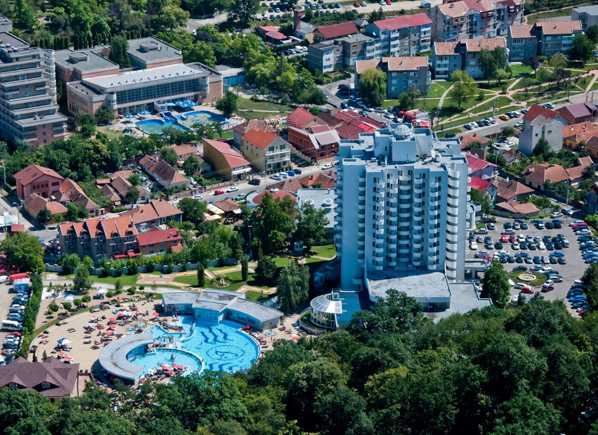

Baile Felix
Staţiunea Băile Felix este cea mai mare stațiune balneară din ţară, situată la 9 km de municipiul Oradea, într-o zonă colinară, cu păduri de fag şi de stejar, la o altitudine de 140 metri.
Stațiunea Baile Felix dispune de o bogată bază de tratament ce cuprinde: instalații pentru băi la cadă, instalații pentru aplicații calde cu nămol și parafina, bazine cu apă termală, instalații pentru elongații sub apă, instalații pentru electro și hidro terapie, saună, piscine acoperite și în aer liber, săli de gimnastica medicală.
Pădurea din jurul staţiunii este locul ideal pentru iubitorii de sport şi nu numai.
Printre obiectivele turistice ale zonei se numără: Lacurile cu nuferi si lotuși populate cu broaște țestoase si pești exotici, Ștrandul cu apă termală Apollo, Primul Aqua Park acoperit din statiune, Rezervația Naturală "Pârâul Peța”.